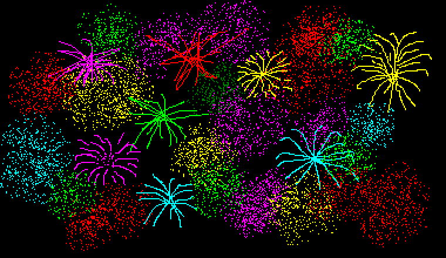
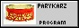
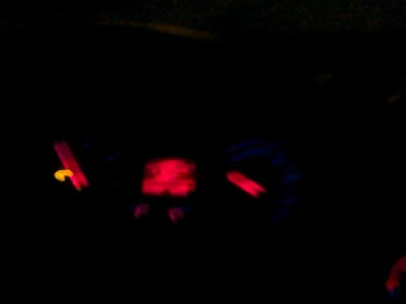

Na nowy rok(naprawde)31 grudnia 20(2)3
Na nowy rok, żeby było fajnie i w ogóle i dużo ogni i ja obiecuje, że będe więcej tutaj rzeczy wrzucał, conajmniej co miesiąc
jakoś bo tu prawie nic nie ma!!!!! To jest moje postanowienie!! Później jeszcze wrzuc tutaj jakiś obrazek tematyczny bo teraz nie mam
czasu bo ziomki zaraz przyjdą. Zdrowych i wesołych sylwestra 2003/2004
admin

Wszystkiego najlepszego z okazji dwóch dni przed urodzinami jezusa
Z okazji świąt życze
żebyście przed domem mieli śnieżyce
dużo choinki i jedzenia
i miłych świąt udania
życzy top poeta 2 dni przed 24 grudnia,_____22.12.2022
jak ktoś wierzy, że swięta są innego dnia to niech sobie zmieni daty na właściwe w tam inspektorze.
Niestety aktualnie moja strona nie umie rozpoznawać to w który dzień wesołych świąt wierzycie. Ale pozdrowienia dla wszystkich jak coś.

Wszystkiego najlepszego z okazji roku!!
Pewnie nikt tego nie zobaczy, ale jak już ktoś zobaczy to życzę mu,
żeby było dibrze w naszym nowym roku.
opowieść o moim salonie najlepszym
przepisy dla moich kochanych czytelników
zzzzzz
strona świąteczna
nic nie można, cały mój jest obrazek

[przed chwilą był początek wakacji, czyli to będzie 2/3 sierpnia, cudowny wieczór, bardzo produktywnyy, roku kolejnego po tym narazie najgorszym]:
przynajmniej trzy rzeczy dzisiaj zrobiłem więc produktywny dzień prawie szczyt eeeeeeeeeeeeeeee
sprawdziłem openbsd cczy to działa czy oni się w chuja robią i to tak na prawde nie dział to jest numer jeden,
2 to sprawdziłem torrenty, a trzy to piosenke pobrałem, według mnie ona jest super ale innym mówie, że badziew, żeby nie było

on ocertyfikował to, może nawet kiedyś się przyzna ale to on zrobił ten obrazek i to ma niby być jakości certyfikat
